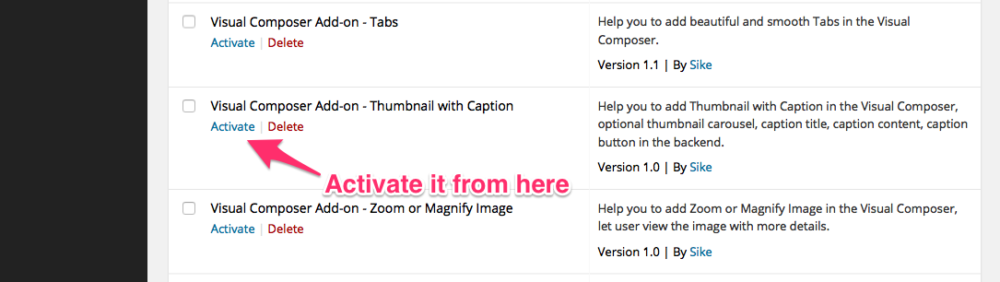
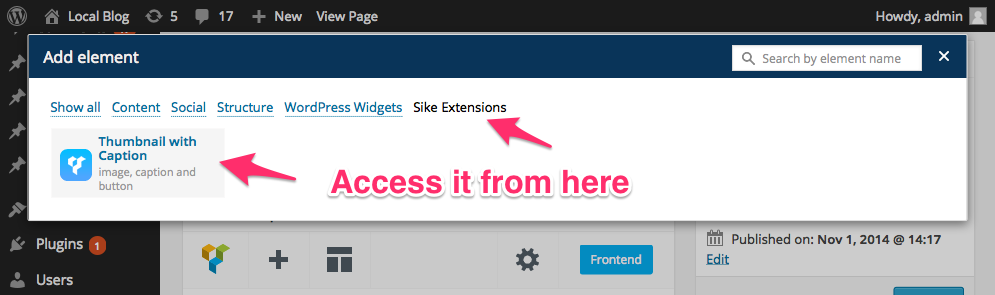
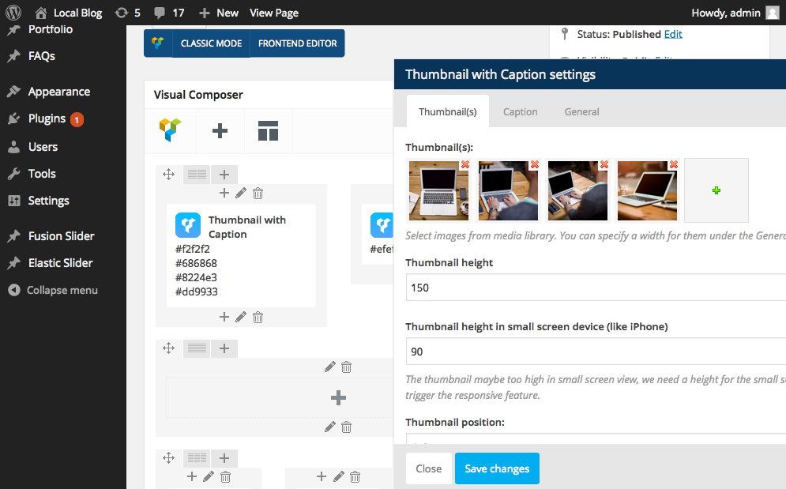
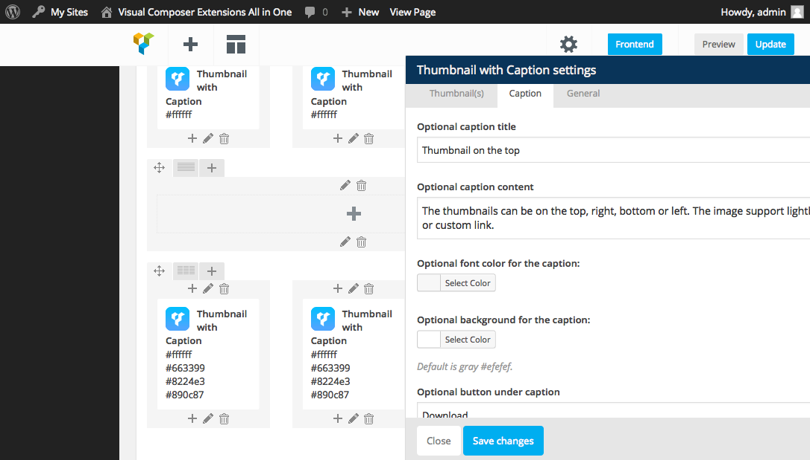

“Visual Composer Add-on - Thumbnail with Caption” Documentation by “Sike”
“Visual Composer Add-on - Thumbnail with Caption”
Created: Nov 5 2014
By: Sike
Contact
Thank you for purchasing. And I appreciate if you can rate my item in the download section of codecanyon, thanks!
Table of Contents
A) Installation and Usage - top
How to install.
- First of all, make sure Visual Composer plugin to be installed and activated on your site.
Then unzip the vc-extensions-thumbnailcaption.zip and upload the folder to the /wp-content/plugins/ directory, via FTP.
Or upload the vc-extensions-thumbnailcaption.zip directly via WordPress's built in plugin uploader.
- Activate the plugin through the 'Plugins' menu in WordPress 
How to use the plugin.
- After activating it, you can access the extension under the Sike Extensions menu of Visual Composer: 
- The add-on backend looks like:
  In the edit area, you can add the thumbnails, choose the thumbnail position, height, link(support lightbox or custom link). Under the Caption tab, you can customize the caption related content, include the title, content and button and their font color and background color.
B) The source Folder - top
Contains the source code for this plugin, you can customize or add new function in the php file.
C)Credits - top
http://kenwheeler.github.io/slick/
http://formstone.it/components/boxer
D)Features: - top
- Thumbnails support lightbox or custom link.
- Auto play slideshow for the thumbnails.
- Retina ready and responsive.
- Optional caption title, caption content and button.
- Optional caption and button background color.
- Extend the Visual Composer, work fine with the VC in a theme or VC installed as a plugin.
- Compatible with latest jQuery and latest WordPress.
- Enqueue the js and css only when needed. Keep WordPress page size smaller.
- FAQ and source code are included in the package. Free update in the future.